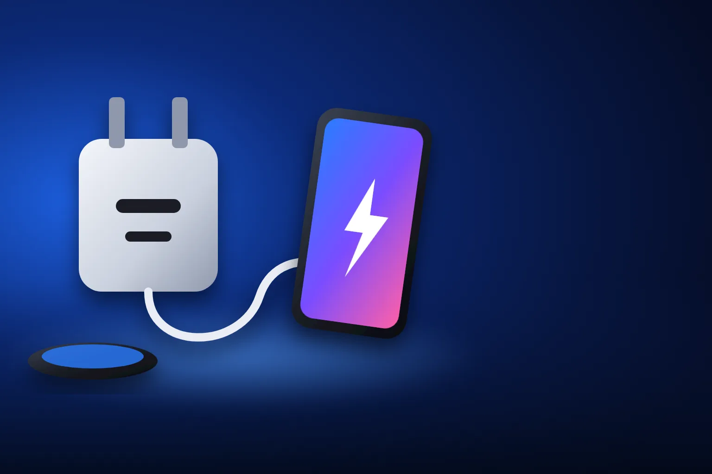

IPHONE
Melhor carregador para iPhone
O iPhone não vem mais com carregador. Com 20 W na tomada, ele vai a 50% em cerca de meia hora.

Melhor custo-benefício para iPhoneBaseus Super Si 20 W
CURADORIA TECHAPROVADO · 2026
O carregador certo depende do padrão de carga do seu celular, não só dos watts. Separamos 15 modelos em 3 perfis, do custo-benefício ao top de linha, e dizemos para quem cada um vale a pena.

NOSSA LEITURA
iPhone carrega rápido com USB-C Power Delivery de 20 W. Samsung precisa de PPS para o Super Fast Charging. Motorola e Xiaomi têm padrões próprios. E prefira marcas conhecidas: carregador sem certificação esquenta e estraga a bateria.
COMECE POR AQUI
IPHONE
O iPhone não vem mais com carregador. Com 20 W na tomada, ele vai a 50% em cerca de meia hora.
SAMSUNG, MOTOROLA E XIAOMI
Cada marca tem seu "turbo". Usar o padrão certo faz o celular carregar na velocidade máxima.

MULTIPORTAS: CELULAR, TABLET E NOTEBOOK
Um carregador só para celular, fone, tablet e até notebook: ideal para viagem e mesa de trabalho.

A FICHA, TRADUZIDA
01 - WATTS
Watt (W) é a potência que o carregador consegue entregar. O celular só puxa o que aguenta: um carregador de 65 W carrega um iPhone a 20 W, sem risco.
iPhone: 20 W bastam. Galaxy A e S comum: 25 W. Galaxy S Plus e Ultra: 45 W. Xiaomi e Motorola variam de 33 W a 120 W, conforme o modelo.
Notebook com USB-C pede de 45 W a 100 W: veja o número no carregador original dele.
02 - PADRÃO DE CARGA
USB-C Power Delivery (PD) é o padrão universal de carga rápida, usado por iPhone, iPad, notebooks e a maioria dos Android.
A Samsung usa uma variação chamada PPS para o Super Fast Charging. Motorola (TurboPower) e Xiaomi (HyperCharge) têm padrões próprios, que só chegam à potência máxima com o carregador da marca.
Com um carregador PD comum, todo celular moderno carrega rápido, só que às vezes abaixo do máximo do aparelho.
03 - GAN
GaN (nitreto de gálio) é um material que substitui o silício dentro do carregador. Ele perde menos energia em forma de calor.
Na prática, um carregador GaN de 65 W tem o tamanho de um carregador comum de 20 W e esquenta menos.
É o que permite carregadores pequenos com várias portas e potência para notebook.
04 - CABO
Muitos carregadores vêm sem cabo. Para carga rápida, use cabo USB-C de 3 A (até 60 W); para 100 W, cabo de 5 A.
Cabos baratos de banca podem limitar a carga a poucos watts ou esquentar.
Para iPhone antigo (até o 14), o cabo é USB-C para Lightning; do 15 em diante, USB-C nas duas pontas.
05 - SEM FIO
O carregador sem fio carrega encostando o celular na base. É mais lento que o cabo e esquenta mais, mas é prático na cabeceira e na mesa.
Qi2 e MagSafe são as versões magnéticas: o celular gruda no lugar certo e carrega até 15 W.
Capa grossa ou com cartão atrapalha a carga sem fio; use capa compatível com MagSafe.
A CURADORIA EM DETALHE
15 modelos da pesquisa
PERFIL · 5 MODELOS, DA ENTRADA AO TOP DE LINHA
O iPhone carrega rápido com qualquer carregador USB-C Power Delivery (PD) de 20 W ou mais: não precisa ser o da Apple, mas precisa ser de marca confiável, porque carregador ruim esquenta e desgasta a bateria. A escada termina nos carregadores sem fio magnéticos, que grudam atrás do iPhone.

IPHONE · ENTRADA 1 de 5
20 W · Power Delivery · 1 porta USB-C
Ver preço na AmazonPOR DENTRO DA ESCOLHA
O básico certo: 20 W com Power Delivery, o padrão de carga rápida do iPhone, numa porta USB-C. A i2GO é uma marca brasileira, com garantia no país.
O i2GO PRO entrega a carga rápida do iPhone pelo menor preço com marca conhecida. Para o dia a dia, ele resolve. O Baseus do próximo degrau usa a tecnologia Super Si, mais compacta.
| Potência | 20 W |
|---|---|
| Padrão | USB-C Power Delivery |
| Portas | 1 USB-C |
| Cabo | Não incluso |
Fonte: ficha e descrição do anúncio, conferidas em 16/11/2026. Dados informados pelo fabricante.
IPHONE · CUSTO-BENEFÍCIO 2 de 5
Melhor custo-benefício para iPhone
20 W PD · compacto · loja oficial Baseus
Ver preço na AmazonPOR DENTRO DA ESCOLHA
O salto é qualidade de construção: 20 W PD com a tecnologia Super Si da Baseus, que deixa o carregador do tamanho de uma tomada e esquentando pouco. Vendido pela loja oficial da marca.
O Super Si é o carregador de iPhone que equilibra preço, tamanho e confiabilidade. A Baseus é uma das marcas de acessório mais respeitadas. Para a maioria, é o ponto de parada.
| Potência | 20 W |
|---|---|
| Padrão | USB-C Power Delivery |
| Portas | 1 USB-C |
| Tecnologia | Super Si (compacto) |
| Cabo | Não incluso |
Fonte: ficha e descrição do anúncio, conferidas em 16/11/2026. Dados informados pelo fabricante.

IPHONE · ALTERNATIVA 3 de 5
Outro caminho: o carregador original da Apple
O original da Apple · 20 W · USB-C
Ver preço na AmazonPOR DENTRO DA ESCOLHA
O carregador da própria Apple: 20 W USB-C, o mesmo que a Apple vende para iPhone e iPad. Corpo branco compacto.
É um desvio pela marca, não pela velocidade: carrega igual ao Baseus. Vale para quem prefere o original e a assistência da Apple.
| Potência | 20 W |
|---|---|
| Portas | 1 USB-C |
| Marca | Apple |
| Cabo | Não incluso |
Fonte: ficha e descrição do anúncio, conferidas em 16/11/2026. Dados informados pelo fabricante.

IPHONE · AVANÇADO 4 de 5
Sem fio magnético · iPhone e AirPods ao mesmo tempo
Ver preço na AmazonPOR DENTRO DA ESCOLHA
O salto é o sem fio: base magnética que gruda no iPhone (12 ou mais novo, com MagSafe) e carrega os AirPods ao mesmo tempo. Dobra para levar na viagem.
O MagFlow troca velocidade por praticidade: dois aparelhos carregando sem fio em um só lugar. Para iPhone com capa, use capa compatível com MagSafe.
| Tipo | Sem fio magnético 2 em 1 |
|---|---|
| Aparelhos | iPhone + AirPods |
| Compatível | iPhone 12 ou mais novo (MagSafe) |
| Formato | Dobrável |
Fonte: ficha e descrição do anúncio, conferidas em 16/11/2026. Dados informados pelo fabricante.

IPHONE · TOP DE LINHA 5 de 5
Top de linha para iPhone
Qi2 de 15 W · suporte em pé · 2 em 1
Ver preço na AmazonPOR DENTRO DA ESCOLHA
O topo: carregador sem fio Qi2 de 15 W, o padrão magnético mais rápido depois do MagSafe da Apple, num suporte que deixa o iPhone em pé, com espaço para os fones. Segundo a UGREEN, vai de 0 a 41% em 30 minutos.
O Qi2 2 em 1 é o sem fio mais rápido da seleção, quase no ritmo do cabo. Para quem gosta do iPhone em pé na mesa, é o ponto de chegada.
| Tipo | Sem fio magnético Qi2, 2 em 1 |
|---|---|
| Potência | 15 W (iPhone) |
| Formato | Suporte em pé |
| Compatível | iPhone com MagSafe ou Qi2 |
Fonte: ficha e descrição do anúncio, conferidas em 16/11/2026. Dados informados pelo fabricante.
PERFIL · 5 MODELOS, DA ENTRADA AO TOP DE LINHA
Os celulares Android carregam rápido em padrões diferentes: a Samsung usa o Super Fast Charging (25 W e 45 W), a Motorola tem o TurboPower e a Xiaomi o HyperCharge. Com um carregador USB-C PD comum, todos carregam, mas às vezes mais devagar. A escada sobe em potência e no padrão de cada marca.

ANDROID · ENTRADA 1 de 5
25 W · USB-C Power Delivery · universal
Ver preço na AmazonPOR DENTRO DA ESCOLHA
O universal barato: 25 W USB-C Power Delivery, que carrega rápido a maioria dos Android e iPhones. A Geonav é uma marca brasileira, com garantia no país.
O Geonav 25 W é a melhor porta de entrada para Android: serve em quase todo celular e custa pouco. Para tirar o máximo do seu celular, prefira o carregador do padrão da sua marca.
| Potência | 25 W |
|---|---|
| Padrão | USB-C Power Delivery |
| Portas | 1 USB-C |
| Cabo | Não incluso |
Fonte: ficha e descrição do anúncio, conferidas em 16/11/2026. Dados informados pelo fabricante.

ANDROID · ALTERNATIVA 2 de 5
Outro caminho: o original para celular Motorola
TurboPower · cabo USB-C de 1 m · original Motorola
Ver preço na AmazonPOR DENTRO DA ESCOLHA
O carregador oficial da Motorola com o padrão TurboPower, que carrega rápido os Moto G e Edge, e cabo USB-A para USB-C de 1 metro incluso.
É um desvio para quem tem Motorola: o original com cabo resolve na hora. Para outras marcas, um carregador USB-C PD é mais versátil.
| Potência | 20 W TurboPower |
|---|---|
| Porta | USB-A |
| Cabo | USB-A para USB-C, 1 m, incluso |
| Marca | Motorola |
Fonte: ficha e descrição do anúncio, conferidas em 16/11/2026. Dados informados pelo fabricante.
ANDROID · CUSTO-BENEFÍCIO 3 de 5
Melhor custo-benefício para Samsung
25 W com PPS · original Samsung · USB-C
Ver preço na AmazonPOR DENTRO DA ESCOLHA
O original da Samsung com Super Fast Charging de 25 W, que usa o padrão PPS para carregar os Galaxy na velocidade máxima, e compatível com outros aparelhos USB-C.
Para Samsung, o carregador original de 25 W é a compra mais certa: a maioria dos Galaxy carrega no máximo a 25 W. Só os Galaxy S Plus e Ultra aproveitam o de 45 W.
| Potência | 25 W |
|---|---|
| Padrão | Super Fast Charging (USB-C PD com PPS) |
| Portas | 1 USB-C |
| Marca | Samsung |
| Cabo | Não incluso |
Fonte: ficha e descrição do anúncio, conferidas em 16/11/2026. Dados informados pelo fabricante.

ANDROID · AVANÇADO 4 de 5
45 W · original Samsung · cabo USB-C incluso
Ver preço na AmazonPOR DENTRO DA ESCOLHA
O salto é para 45 W, o Super Fast Charging 2.0, que carrega os Galaxy S Ultra e Plus e os tablets Galaxy Tab S mais rápido. Vem com cabo USB-C.
O de 45 W só faz sentido para os aparelhos que aceitam essa potência. Se é o seu caso, ganha minutos preciosos; se não, o de 25 W basta.
| Potência | 45 W |
|---|---|
| Padrão | Super Fast Charging 2.0 (PPS) |
| Portas | 1 USB-C |
| Cabo | USB-C incluso |
| Modelo | EP-T4511 |
Fonte: ficha e descrição do anúncio, conferidas em 16/11/2026. Dados informados pelo fabricante.

ANDROID · TOP DE LINHA 5 de 5
Top de linha para Android
100 W HyperCharge · GaN · cabo incluso
Ver preço na AmazonPOR DENTRO DA ESCOLHA
O topo em potência: até 100 W no padrão HyperCharge da Xiaomi, com tecnologia GaN, que deixa o carregador menor, e cabo USB-C de 1 metro incluso.
O Turbo 100 W é o carregador mais rápido da seleção, mas só para Xiaomi. Para outras marcas, prefira o padrão do fabricante ou um GaN multiportas.
| Potência | Até 100 W (HyperCharge) |
|---|---|
| Tecnologia | GaN |
| Porta | USB-A |
| Cabo | USB-C, 1 m, incluso |
Fonte: ficha e descrição do anúncio, conferidas em 16/11/2026. Dados informados pelo fabricante.
PERFIL · 5 MODELOS, DA ENTRADA AO TOP DE LINHA
Os carregadores GaN (nitreto de gálio) são menores e esquentam menos que os comuns, o que permite colocar várias portas e muita potência num bloco pequeno. Com 65 W, já carregam a maioria dos notebooks com USB-C. A escada sobe em número de portas e potência total.

POR DENTRO DA ESCOLHA
Duas portas USB-C com Power Delivery e 35 W no total, num bloco GaN compacto: carrega celular e fone (ou dois celulares) ao mesmo tempo.
O GaN Duo 35 W é a entrada nos multiportas: substitui dois carregadores pelo preço de um. Para incluir o notebook, suba para 65 W.
| Potência total | 35 W |
|---|---|
| Portas | 2 USB-C PD |
| Tecnologia | GaN |
| Modelo | CH35PDWT |
Fonte: ficha e descrição do anúncio, conferidas em 16/11/2026. Dados informados pelo fabricante.
MULTIPORTAS · CUSTO-BENEFÍCIO 2 de 5
Melhor custo-benefício multiportas
USB-C + USB-A · 65 W · carrega notebook
Ver preço na AmazonPOR DENTRO DA ESCOLHA
O salto é para 65 W: a porta USB-C carrega notebooks com USB-C (a maioria dos ultrafinos), e a USB-A atende celular, fone ou relógio ao mesmo tempo.
O GaN Duo 65 W é o melhor custo-benefício para aposentar o carregador do notebook: potência suficiente, tamanho pequeno e marca com garantia no Brasil.
| Potência total | 65 W |
|---|---|
| Portas | 1 USB-C PD + 1 USB-A Quick Charge |
| Tecnologia | GaN |
| Carrega | Notebook USB-C, tablet, celular |
Fonte: ficha e descrição do anúncio, conferidas em 16/11/2026. Dados informados pelo fabricante.

MULTIPORTAS · ALTERNATIVA 3 de 5
Outro caminho: três portas pelo mesmo preço
3 portas · 65 W · GaN
Ver preço na AmazonPOR DENTRO DA ESCOLHA
Os mesmos 65 W, com três portas: dá para carregar notebook, celular e fone juntos. A UGREEN é especializada em carregadores GaN.
É um desvio por número de portas: custa pouco mais que o Geonav e troca a USB-A por mais uma USB-C. Para quem tem vários aparelhos USB-C, vale.
| Potência total | 65 W |
|---|---|
| Portas | 3 |
| Tecnologia | GaN |
| Compatível | MacBook, iPhone, iPad, Samsung, Xiaomi |
Fonte: ficha e descrição do anúncio, conferidas em 16/11/2026. Dados informados pelo fabricante.

MULTIPORTAS · AVANÇADO 4 de 5
3 USB-C + 1 USB-A · 65 W · GaN compacto
Ver preço na AmazonPOR DENTRO DA ESCOLHA
O salto é para quatro portas, três USB-C e uma USB-A, em um carregador GaN que a UGREEN diz ser 48% menor que o carregador comum de notebook.
O Nexode de 4 portas é o carregador de viagem completo. Se você não liga quatro aparelhos de uma vez, o de três portas resolve por metade do preço.
| Potência total | 65 W |
|---|---|
| Portas | 3 USB-C + 1 USB-A |
| Tecnologia | GaN |
Fonte: ficha e descrição do anúncio, conferidas em 16/11/2026. Dados informados pelo fabricante.

MULTIPORTAS · TOP DE LINHA 5 de 5
Top de linha multiportas
100 W · 4 USB-C · tela com status de carga
Ver preço na AmazonPOR DENTRO DA ESCOLHA
O topo: 100 W em quatro portas USB-C, suficiente para notebook de 14 polegadas e mais três aparelhos. A tela no formato de robô mostra o status da carga.
O Uno 100 W é o carregador para quem quer um ponto só de energia na mesa: potência para notebook e sobra para o resto. A tela é um charme, não uma necessidade.
| Potência total | 100 W |
|---|---|
| Portas | 4 USB-C |
| Tela | Mostra o status da carga |
Fonte: ficha e descrição do anúncio, conferidas em 16/11/2026. Dados informados pelo fabricante.
Nenhum modelo encontrado. Tente outro termo ou volte para Todos.
LADO A LADO
| Modelo | Perfil | Posição | Potência | Destaque |
|---|---|---|---|---|
| i2GO PRO 20 W USB-C PD | iPhone | Entrada | 20 W | 20 W · Power Delivery · 1 porta USB-C |
| Baseus Super Si 20 W | iPhone | Custo-benefício | 20 W | 20 W PD · compacto · loja oficial Baseus |
| Apple Adaptador de Energia USB-C de 20 W | iPhone | Alternativa | 20 W | O original da Apple · 20 W · USB-C |
| UGREEN MagFlow 2 em 1 dobrável | iPhone | Avançado | Sem fio magnético · iPhone e AirPods ao mesmo tempo | |
| UGREEN Qi2 2 em 1 com suporte | iPhone | Top de linha | 15 W (iPhone) | Qi2 de 15 W · suporte em pé · 2 em 1 |
| Geonav SuperPower 25 W PD | Android | Entrada | 25 W | 25 W · USB-C Power Delivery · universal |
| Motorola TurboPower 20 W (com cabo) | Android | Alternativa | 20 W TurboPower | TurboPower · cabo USB-C de 1 m · original Motorola |
| Samsung 25 W Super Fast Charging | Android | Custo-benefício | 25 W | 25 W com PPS · original Samsung · USB-C |
| Samsung 45 W Super Fast Charging 2.0 | Android | Avançado | 45 W | 45 W · original Samsung · cabo USB-C incluso |
| Xiaomi Turbo 100 W GaN | Android | Top de linha | Até 100 W (HyperCharge) | 100 W HyperCharge · GaN · cabo incluso |
| Geonav GaN Duo 35 W | Multiportas | Entrada | 2 USB-C PD | 2 USB-C · 35 W · GaN |
| Geonav GaN Duo 65 W | Multiportas | Custo-benefício | 1 USB-C PD + 1 USB-A Quick Charge | USB-C + USB-A · 65 W · carrega notebook |
| UGREEN 65 W GaN 3 portas | Multiportas | Alternativa | 3 | 3 portas · 65 W · GaN |
| UGREEN Nexode 65 W GaN 4 portas | Multiportas | Avançado | 3 USB-C + 1 USB-A | 3 USB-C + 1 USB-A · 65 W · GaN compacto |
| UGREEN Uno 100 W 4 portas | Multiportas | Top de linha | 4 USB-C | 100 W · 4 USB-C · tela com status de carga |
CONSIDERAÇÕES FINAIS
Os tops de linha (UGREEN Qi2, Xiaomi 100 W e UGREEN Uno 100 W) valem para quem quer carga sem fio rápida, tem Xiaomi com HyperCharge ou carrega vários aparelhos na mesa. Para a maioria, um carregador do padrão certo resolve.
Para iPhone, o Baseus Super Si 20 W. Para Samsung, o original de 25 W. Para celular e notebook, o Geonav GaN Duo 65 W.
Pode, se for de marca confiável e USB-C Power Delivery. Para a velocidade máxima, use o padrão da sua marca (PPS na Samsung, TurboPower na Motorola, HyperCharge na Xiaomi).
Não. O celular controla quanto puxa. O que desgasta a bateria é calor: evite carregadores sem marca e deixar o celular no sol carregando.
É prático, mas mais lento e esquenta mais. Os magnéticos Qi2 e MagSafe são os melhores para iPhone.
Serve na maioria dos notebooks que carregam por USB-C. Confira os watts do carregador original do notebook.
Porque ele muda várias vezes por dia. Usamos o preço só para montar a escada de cada perfil; o botão leva ao valor atualizado na loja.
TRANSPARÊNCIA EDITORIAL
Separamos os perfis pelo que as pessoas mais procuram: carregador para iPhone, carregador turbo para Samsung, Motorola e Xiaomi, e carregador GaN multiportas. Cada modelo precisa responder com clareza "para quem ele é o certo".
Em cada perfil há modelos em faixas de preço diferentes, e cada degrau precisa entregar algo que o anterior não entrega. Dois modelos com a mesma proposta não entram juntos.
Ficha e especificações foram conferidas nos anúncios das lojas em 16/11/2026.
Os links de compra desta página são de afiliado: se você comprar por eles, o TechAprovado pode ganhar uma comissão, sem custo adicional para você. Isso não muda a ordem nem a escolha dos produtos.
📲 GUIAS E DICAS NO SEU FEED
Dicas práticas antes de comprar, em carrosséis e vídeos curtos, sempre com link para o guia completo.